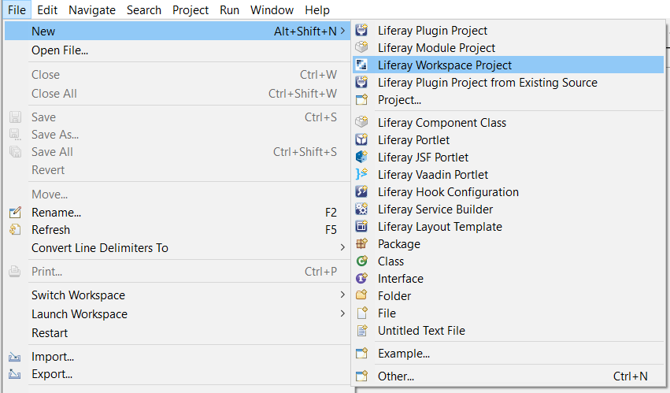
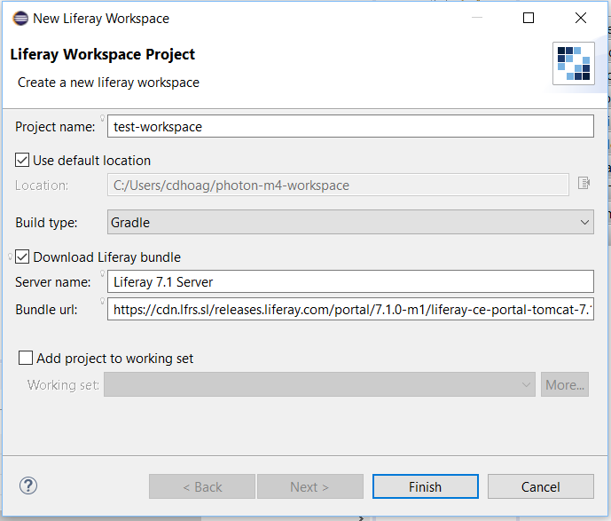
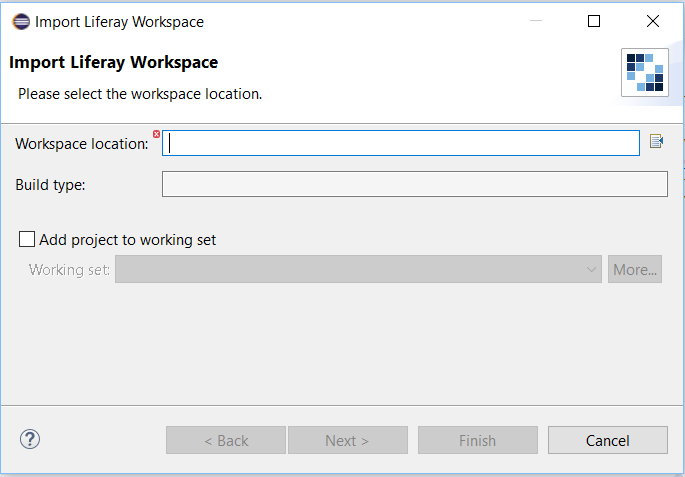

A Liferay Workspace is a generated environment that is built to hold and manage your @product@ projects. This workspace is intended to aid in the management of Liferay projects by providing various Gradle build scripts and configured properties. This is the official way to create Liferay 7.0 modules using Gradle. For those developers that still want to develop WAR-style plugins using the Plugins SDK, this way is also supported using a Liferay Workspace.
Your workspace offers Gradle properties that you can modify to help manage the generated folders. There are also some folders that aren’t generated by default, but can be manually created and set. This provides you the power to customize your workspace’s folder structure any way you’d like.
For this tutorial, you’ll learn how to generate a Liferay Workspace using Blade CLI. You can also create a Liferay Workspace using Liferay IDE, which runs on Blade tools behind the scenes. Liferay IDE gives you a graphical interface instead of the command prompt, which can streamline your workflow. Before attempting to create a Liferay Workspace via Blade CLI in the command prompt, make sure you’ve installed Blade, which is covered in the section Installing Blade CLI.
The instructions covered in this tutorial apply to both the commercial and open source versions of Liferay.
Buckle up! You’re about to create your own Liferay 7.0 Workspace!
The Blade CLI tool you installed in the previous sub-section provides many different commands to help build and customize Liferay projects. The first thing you should do before building and customizing projects is create a Liferay Workspace. Your workspace is the home for all your custom Liferay projects. Navigate to the folder where you want your workspace and run the following command:
blade init [WORKSPACE_NAME]
If you still plan on using a Plugins SDK and wish to use it in conjunction with a workspace, navigate to your Plugins SDK root folder and run the following command:
blade init -f
This command builds a workspace and automatically adds and configures your current Plugins SDK environment for use inside the workspace. See the Using a Plugins SDK From Your Workspace section for more information on how to use a Plugins SDK from within a workspace.
Once your workspace is generated, look at its folder structure. Several folders and build/properties files were autogenerated:
modules: holds your custom modules which are built using the blade create command. To learn more about building modules, see the Creating Modules with Blade CLI. tutorial.
themes: holds your custom themes which are built using the Theme Generator.
configs: holds the configuration files for different environments. These files serve as your global configuration files for all Liferay servers and projects residing in your workspace.
gradle: holds the Gradle Wrapper used by your workspace.
The build/properties files included in your workspace’s root directory sets your workspace’s Gradle properties and facilitates the build processes of your modules.
You’ll learn about how to use these folders and properties files throughout the next few tutorials. Before you begin using your workspace, it’s a good practice to set your workspace Gradle properties in the gradle.properties file. There are several commented out properties in this file. These are the default properties set in your workspace. If you’d like to change a variable, uncomment the variable and set it to a custom value. For instance, if you want to store your modules in a folder other than [ROOT]/modules, uncomment the liferay.workspace.modules.dir variable and set it to a different value.
Next you’ll learn about generating and using a @product@ instance from within your workspace.
Liferay Workspaces can generate and hold a Liferay Server. This lets you build/test your plugins against a running Liferay instance. Before generating a Liferay instance, open the gradle.properties file located in your workspace’s root folder. There are several configurable properties for your workspace’s Liferay instance. For instance, you can set the version of Liferay you’d like to generate and install (e.g., 7.0-ce-ga1).
Once you’ve finalized your Gradle properties, navigate to your workspace’s root folder and run
gradlew initBundle
As you read earlier, the workspace uses a Gradle wrapper to download and use Gradle build tools. This command downloads the version of Liferay you specified in your Gradle properties and installs your Liferay instance in the bundles folder. To start your Liferay instance, run
blade server start -b
This command starts your Liferay server in a separate window. You also have the option to run your server in debug mode (-d).
Awesome! You have a built-in Liferay server in your workspace and can start the server using Blade CLI. Next you’ll learn how to use a legacy Plugins SDK from your workspace.
Because @product@ 7.0 uses a module-based framework, the current structure of a Liferay Workspace is centered around module development. There are still, however, many situations where you must create WAR-style plugins using the Plugins SDK. Because of this, your workspace can also work with the Plugins SDK. When configuring your SDK in a workspace, you can take advantage of all the new functionality workspaces provide and also use the SDK environment that you’re used to. To learn more about how to convert legacy applications to 7.0 modules and what you should consider before making the jump, visit the Modularizing an Existing Portlet tutorial.
If you used the blade init -f command to generate your workspace, your Plugins SDK is already configured to use. If you created your workspace from scratch and want to use a Plugins SDK, follow the instructions below.
If you revisit your workspace’s gradle.properties file, you’ll notice the Plugins SDK folder is set to plugins-sdk. This folder was not generated by default, so you must create it yourself. In your workspace’s root folder, create the plugins-sdk folder. Then copy your legacy Plugins SDK files into the plugins-sdk folder.
One last thing you must do to ensure the Plugins SDK works properly in the context of your workspace is to generate all its requirements. These requirements include the build JARs the Plugins SDK relies on to function properly. To download the necessary requirements for your Plugins SDK, run the following command from your workspace’s root folder:
gradlew tasks
Once the downloading is complete, your Plugins SDK is ready to use in your workspace. It’s as simple as that!
Next you’ll learn about using Liferay Workspaces in Liferay IDE.
Using Blade CLI is a great option for doing things fast and with little overhead. There are, however, developers who prefer using an IDE with a nice GUI. If you’re one of those developers, Liferay provides the same workspace functionality through Liferay IDE. If you’re curious about the directory structure and configuration files in a Liferay Workspace, visit the Using Blade to Create Your Workspace section.
To create a Liferay Workspace in IDE, select File → New → Liferay Workspace Project.

Figure 1: By selecting Liferay Workspace, you begin the process of creating a new workspace for your Liferay projects.
A New Liferay Workspace popup window appears, presenting several configuration options. Follow the instructions below to create your workspace.
Give your workspace a name.
Choose the location where you’d like your workspace to reside. Checking the Use default location checkbox places your Liferay Workspace in the Eclipse workspace you’re working in.
Check the Download Liferay bundle checkbox if you’d like to auto-generate a Liferay instance in your workspace. You’ll be prompted to name the server, if selected. This Liferay bundle is generated the same way as described in the previous section.
Check the Add project to working set checkbox if you’d like the workspace to be a part of a larger working set you’ve already created in IDE. For more information on working sets, visit Eclipse Help.
Click Finish to create your Liferay Workspace.

Figure 2: Liferay IDE provides an easy-to-follow menu to create your Liferay Workspace.
A popup window appears prompting you to open the Liferay Workspace perspective. Click Yes, and your perspective will switch to Liferay Workspace.
The Liferay Workspace perspective is intended for Gradle development for Liferay 7 modules. Since Liferay Workspaces are used for Gradle based development and the Liferay workspace is intended for the Plugins SDK and Ant based development, the two perspectives are independent of each other.
Figure 3: The Liferay Workspace perspective is preferred for Liferay 7 and OSGi module development.
You’ll find your new workspace in the Project Explorer and your Liferay server (if you created it) in the Servers menu. It’s important to note that an Eclipse workspace can only have one Liferay Workspace project.
Figure 4: An IDE workspace only supports one Liferay Workspace project. If you create another, you’ll be given an error message.
You can configure your workspace’s module presentation by switching between the default Hierarchical or Flat views. To do this, navigate to the Project Explorer’s View Menu () and select Projects Presentation and then the presentation mode you’d like to display. The Hierarchical view displays subfolders and subprojects under the workspace project, whereas the Flat view displays the workspace’s modules separately from the workspace.
Figure 5: The Hierarchical project presentation mode is set, by default.
If you’ve already created a Liferay Workspace and you’d like to import into your existing IDE, you can do so by navigating to File → Import → Liferay → Liferay Workspace Project. Then click Next and browse for your worspace project. Once you’ve selected you workspace, click Finish.

Figure 5: You can import an existing Liferay Workspace into your current IDE session.
Congratulations! You’ve learned how to create a Liferay Workspace using the command line and Liferay IDE. Now that your workspace is created, you can begin creating Liferay plugins.